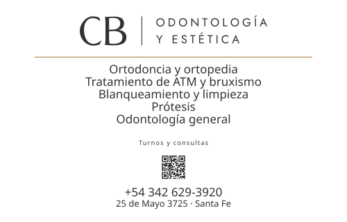

Entregable físico · Placa de acceso
No es el cartel de la fachada y no es la chapa de la profesional. Es la placa chica que va al costado de la puerta, y su función la definió Cecilia: que el que pasa por la vereda —o el paciente derivado que nunca estuvo— se acerque y confirme que el consultorio es ahí. El cartel grande se ve de lejos; esto se lee a un metro, parado.
🔴 Lo que falta antes de mandar a fabricar: probar el QR en la calle con un teléfono real, y decidir si el filete dorado se queda — ver «El material», abajo.
La decisión que más cambia la pieza
Lo definió Juan, y el argumento es de arquitectura, no de gusto: la placa identifica al consultorio, no a una persona. El día que entre otro profesional, una matrícula grabada empieza a mentir — y en metal eso no se corrige editando un archivo: se fabrica la placa de nuevo.
Es la misma regla que sacó los horarios de la sección Contacto del sitio —«un dato publicado no se copia si ya vive en la base, porque empieza a mentir»— aplicada al material físico, donde el error es mucho más caro. El modelo de datos ya se había reabierto en agosto para soportar varios profesionales.
🔑 Dónde se cumple entonces la identificación profesional: ADENTRO, con el diploma y la matrícula a la vista, que es lo que la normativa pide y suele ser requisito de habilitación. Eso entra al paquete de señalética interna, hoy pausado — y le da una función que antes no tenía.
Qué puede decir, y no es opinión
Verificado que nos aplica: su art. 1 abarca a «todos los profesionales del arte de curar», nombra a los odontólogos en el art. 34 y tiene un Título IV, «Asuntos exclusivamente odontológicos».
Art. 89 — lista cerrada de lo que se puede anunciar: nombre y apellido · títulos · las ramas y especialidades a que se dedique · horas de consulta · dirección · teléfono. «Todo otro ofrecimiento es industrialismo.»
Art. 90 — reñido con la ética: tamaño desmedido, caracteres llamativos o fotografías · tarifas · agradecimiento de pacientes.
⚠ Falta el reglamento propio del Colegio de Odontólogos — se preguntó en agosto y no contestó. El tope de 800 cm² y la regla «si no es metal, blanco con letras negras» salen del Reglamento de Publicidad del Colegio de MÉDICOS de Santa Fe, 1ª Circunscripción, art. 10: misma provincia, otra profesión. Se usa como criterio, no como obligación.
El color
Lo propuso Juan y la medición lo respalda. La señalética pide
65-70 % de contraste y sube el piso a 7:1 donde se lee a
distancia con luz cambiante. Corrido tools/medir-contraste.py:
| par | contraste | sirve para una placa |
|---|---|---|
| grafito sobre blanco | 12,82 | ✅ pasa 7:1 con el doble de margen |
| dorado sobre marfil | 2,89 | ❌ no llega ni al mínimo básico |
| grafito sobre fondo dorado | 4,15 | ❌ sólo aguanta texto grande |
🔑 El dorado no falla sólo como tinta: también falla como fondo. Queda de filete, que es el rol que la pieza 1 ya le había dado — «acento, línea, o fondo con letra grafito». Esto no es un desvío de la identidad: es la misma regla aplicada al material.
📌 Regla que queda para todo el proyecto: pantalla y redes → dorado de acento · cartelería → grafito sobre claro, dorado sólo de filete · acabado mate siempre, sea metal o acrílico. Un brillo tapa el texto, y la norma de señalética lo pide explícito.
La segunda pieza
Es otra pieza, no un tamaño distinto de la misma: es apaisada, tiene su propia lista de tratamientos —en el orden que ella dictó, y el orden ES la decisión— y su propia disposición.

Lo que hay que saber antes de mandarlo a hacer
tratamientos
ni en el sitio. No es un problema del cartel: la lista con la que se
construyó el backend quedó corta, y el sistema de turnos filtra por
tratamiento.📐 Los tamaños salen de la distancia de lectura: con la fórmula de señalética —x-height = distancia en metros × 2,5 mm— los 16 mm de la lista dan 7,4 mm de minúscula, o sea unos 3 metros. El teléfono va más grande que la dirección a propósito: es el dato que alguien anota desde lejos.
🔑 La lista va alineada a la izquierda DENTRO de un bloque centrado, que no es lo mismo que «todo a la izquierda». El motivo es medible: «Prótesis» tiene 8 caracteres y «Tratamiento de ATM y bruxismo» tiene 29 — centrados, esos cinco renglones dejan un borde dentado que se ve antes que el texto.
El material
La alineación
Lo corrigió Juan: «esto es cartelería, puede ir centrado — nuestras reglas tienen que respetar los usos y costumbres del mundo también». Tenía razón, y la investigación lo confirma con una distinción que no teníamos:
Por eso los tratamientos van en tira, con punto medio, en tres renglones casi del mismo largo: entran los nueve, no hay columnas asimétricas y el bloque cierra parejo. El punto medio ya lo usa el sistema en la dirección y en la firma de los testimonios.
📌 Lo que esto deja como criterio: una regla del sitio no se copia a una pieza física sin verificar qué hace el mundo con ese objeto. El pie centrado del sitio es una excepción declarada; una placa centrada es la convención. No son lo mismo y se habían mezclado.
Los números
| qué | cuánto | por qué |
|---|---|---|
| La placa entera | 230 × 323 mm · 743 cm² | Casi una hoja A4 (210 × 297). El tope del criterio local es 800 cm² y queda por debajo. 🔴 EL ALTO NO ES UN NÚMERO ELEGIDO: sale del contenido más un margen inferior un 20 % mayor que el superior, que es la compensación óptica de toda pieza colgada. Con el alto fijo, el margen de abajo había quedado siendo el DOBLE. |
| El wordmark | 150 mm de ancho | El mínimo por técnica es 6,3 cm en grabado y 12,6 en serigrafía (COMO-USAR-EL-LOGO.md). Entra con holgura en las dos. |
| El margen lateral | 22 mm · 11 % | Los manuales de señalización piden de 10 a 15 % del ancho del panel por lado, y que el espacio hasta el borde sea del orden de la altura de la letra más grande. Nuestra propia guía del logo pide un aire de al menos la altura de la «C». Las tres convergen acá. |
| Los tratamientos | 6,16 mm de altura de mayúscula | Medido sobre la tipografía real, no estimado. Por la fórmula de señalética —x-height = distancia en metros × 2,5 mm— se leen hasta 1,62 m. |
| Los tratamientos, la forma | 3 renglones | Los nueve, en tira separada por punto medio. Centrar una lista de nueve renglones es el caso que la literatura desaconseja; tres renglones cortos y parejos es el que recomienda. |
| El renglón más largo | 156,1 mm · 78 % | Medido con una sonda en el archivo, no calculado a ojo. Antes medía 170,4 y dejaba 14,8 mm de margen: se comía el margen declarado de 18. |
| Dirección y teléfono | 6,3 mm | Se leen hasta 1,66 m. |
| El rótulo del QR | 4,9 mm | Hasta 1,29 m. Es el elemento de menor rango y se lee cuando ya estás enfrente. |
| El QR | 66 mm de lado | La regla es 10:1 — un lado de 1 cm se escanea desde 10 cm. Con 66 mm se escanea SIN acercarse, desde donde la persona ya está parada. A 45 mm había que arrimarse, y además era el bloque más angosto de la placa. Lleva sus 4 módulos de zona de silencio (ISO/IEC 18004). |
| El QR, verificado | decodificado | No se dio por bueno: se rasterizó el PDF a 300 dpi y se leyó con zbar. Devuelve wa.me/5493426293920. |
| El filete dorado | 0,8 mm | Es el único dorado de la pieza y no lleva texto encima: ahí el dorado sí cumple, porque su trabajo es separar, no ser leído. |
Cómo se produce
placa-230x323.pdf — vectorial, a tamaño
real. Verificado con pdfinfo: mide 200,05 × 299,9 mm.placa-230x323.svg — el mismo dibujo,
editable, con la tipografía adentro del archivo.tools/construir-placa.py, nunca se
editan a mano. Los colores salen de css/tokens.css y el
logo de brand/logo/curvas/.⚠️ Un fallo que sólo apareció
midiendo, y conviene no repetirlo: con la tipografía referenciada por
ruta, el archivo se veía perfecto en pantalla y el PDF salía en
Helvetica — un SVG cargado como imagen no trae recursos externos.
Lo destapó pdffonts, no el ojo. Ahora la fuente va
embebida y el PDF sale con Jost.